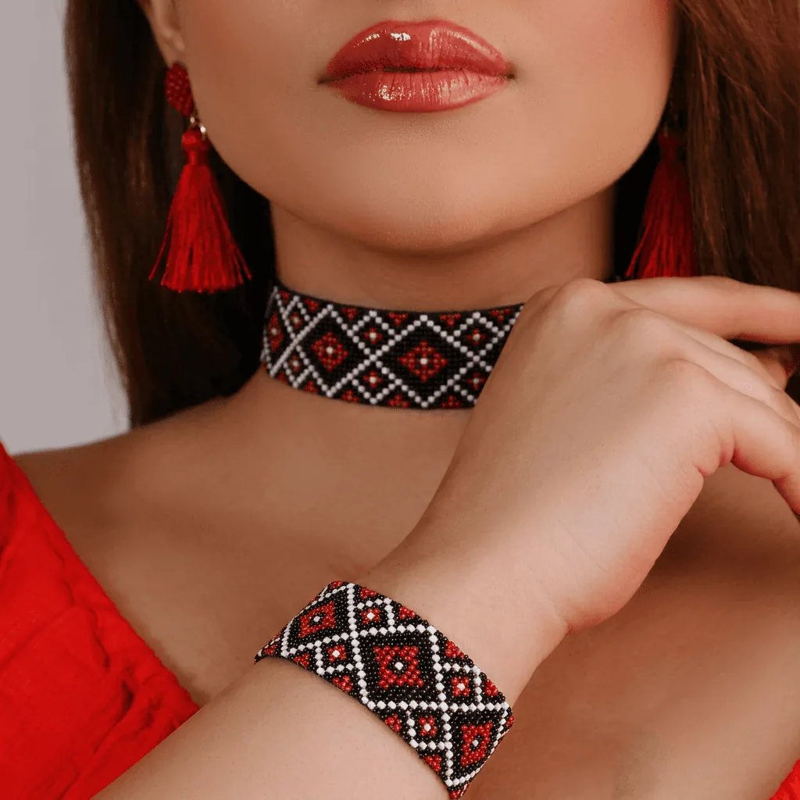
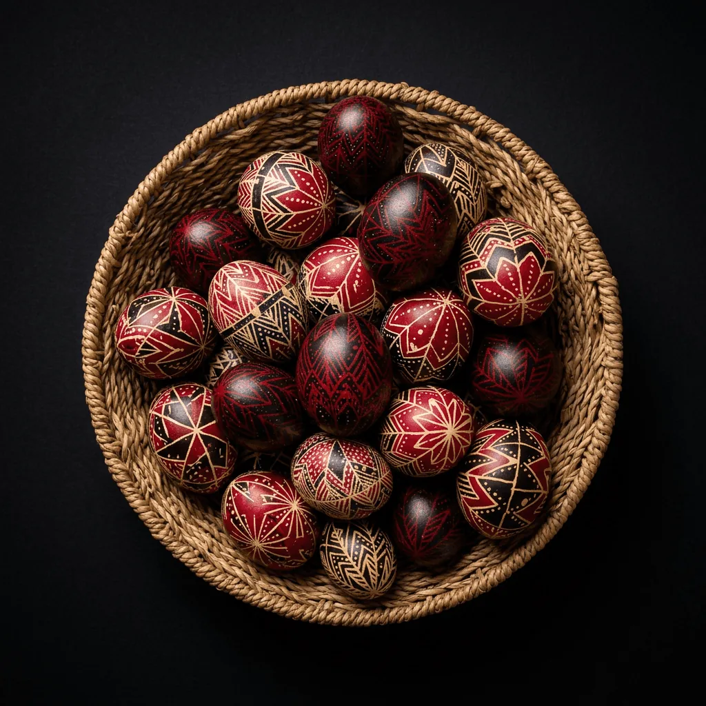

02 · Kézzel készült
Hagyományos
technikák
A képernyő előtt a kéz volt az első eszközöm – és ma is az maradt. A gyöngyszövésben és a tojásdíszítésben nincs gyorsítás és nincs visszavonás: gyöngyszemenként, viaszcseppenként születik a forma, és minden mozdulat számít. Apró elemekből lesz egész, viaszból és színből pedig olyan minta, amelyet nemzedékek adtak kézről kézre, mielőtt hozzám ért. Ezek a munkák tanítottak meg arra, amit ma minden felületre magammal viszek: hogy minden vonás döntés, és hogy a legszebb formák a legtürelmesebb kezek alatt születnek.

01
Gyöngyszövés
Viselhető művészet, türelem és apró elemekből épülő minták.
Kategória megnyitása ↗
02
Tojásírás viasztechnikával
Viasztechnika, örökség és generációkon át őrzött motívumok.
Kategória megnyitása ↗Hamarosan
03
Nemezelés
Amikor a gyapjú életre kel.
Kategória megnyitása ↗